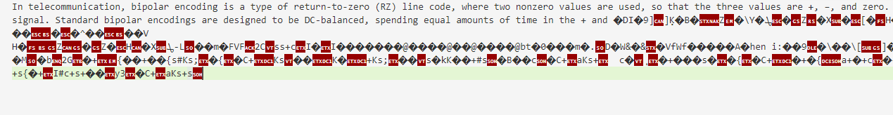

A couple months ago, I wrote a blogpost giving a basic overview of the technologies behind the Internet, starting from the physical layer. In that post, I briefly touched on the challenges faced by WiFi transceivers—specifically, coordinating transmissions between devices to ensure that only one device is transmitting on the channel at a time. I likened the problem to what happens when multiple people try to have a conversation in the same room, which got me thinking: what if we did just that? What if I wrote a program that allowed two computers to communicate through their speaker and microphone?
It turns out that transmitting digital data over an analog channel designed for audio is hardly a novel idea. Older readers may recall that once upon a time, the most prevalent manner of accessing the Internet was through dialup, where two modems communicate through the telephone system.
Speaking of which, what even is a modem? Well, modem is actually an abbreviation for modulator-demodulator. Essentially, what we are going to be doing is implementing a modem in software.
Before I even started the project, I decided to narrow down the scope to just devices directly connected with an audio cable. Trying to communicate via speaker and microphone introduced too many challenges that I wasn't really prepared to deal with. Oh well, maybe another day…
Before we start, let's establish what the hardware we are dealing with is capable of. Most sound cards are capable of sampling at 96,000 Hz, meaning that the computer measures the level of the analog signal coming from the microphone 96,000 times per second and quantizes the voltage on the line as a digital value.
For comparison, the boring old phone system samples at 8,000 Hz. Despite this insanely low bandwidth, dialup systems were still able to achieve data rates of 33.6 kbit/s, giving us around 4.2 bits/Hz. (ISPs later achieved 56K by directly interfacing with the underlying telephone system, which had gone digital by then, so it doesn't count.)
My goal for this project is to at least beat dialup. It seems like it should be easy; after all, our bandwidth is nearly 12 times greater, and since the two devices are mere feet away the noise and crosstalk should be minimal. Let's see if we can do it.
Modulation §
The fundamental problem we are dealing with is how to convert a digital signal to an analog one in a way that allows us to reliably recover the digital signal even in the presence of noise and latency. Thankfully, smarter people than me have already put a great deal of effort into attacking this problem, so I have literally centuries of telephony to build off of.
My first successful transfer between two computers was done using a simple polar return-to-zero line code. Basically, for each bit, the signal level is set to +1 or -1 depending on the bit's value. Between each bit, the line level returns to zero. This made the decoder extremely simple:
// encoder states
const HIGH = 0, LOW = 1, ZERO = 2;
// decoded bits
const bits = [];
for(const sample of samples) {
if(sample > THRESHOLD) {
state = HIGH;
} else if(sample < -THRESHOLD) {
state = LOW;
} else {
if(state != ZERO) {
bits.push(state == HIGH ? 1 : 0);
}
state = ZERO;
}
}With this, we were able to transmit our first messages:

After slightly tuning the value of THRESHOLD, we managed to transfer the full script of Bee Movie (2007) at the stunning rate of 11 kilobits per second. Here's what a GIF transmitted with this encoding sounds like:
This success was very encouraging, but it only marked the beginning of our journey. To achieve higher bitrates, we needed to employ a better modulation scheme.
TBC